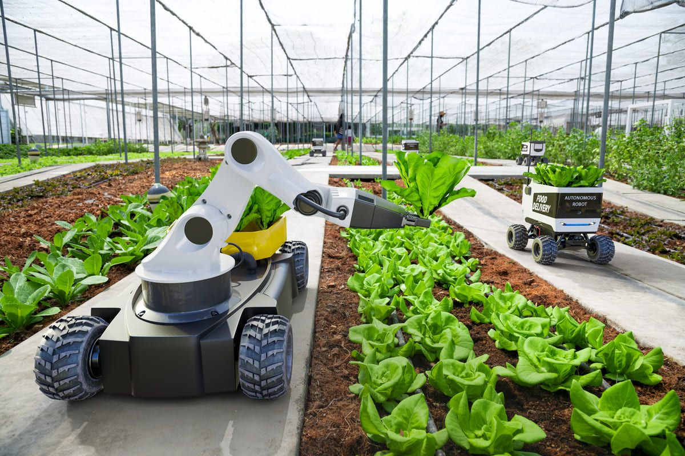
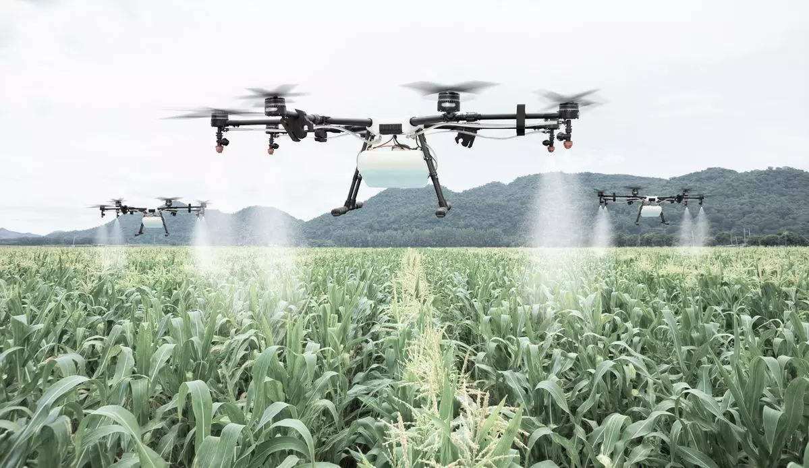

O que é a Agricultura de Precisião?
A Agricultura de Precisão (AP) é um conjunto de princípios e tecnologias aplicadas ao manejo da variabilidade espacial e temporal na produção agrícola, com o objetivo de aumentar a produtividade das culturas e melhorar a qualidade ambiental (Pierce & Nowak, 1999). Na prática, a AP envolve a coleta e processamento de dados detalhados e georreferenciados das áreas de cultivo, permitindo a formulação de estratégias de manejo mais eficazes, especialmente no que se refere ao uso racional de insumos. Recentemente, a AP evoluiu para além dos equipamentos e das culturas de milho e soja, abrangendo todos os sistemas de produção que apresentam variabilidade. A atual demanda por AP concentra-se na gestão da variabilidade espaço-temporal, reconhecendo que o tratamento diferenciado dos atributos da lavoura pode aumentar o retorno econômico e reduzir os impactos ambientais. Esse enfoque impõe grandes desafios às tecnologias e conhecimentos disponíveis sobre sistemas de produção antes considerados uniformes, uma vez que as técnicas de manejo anteriores não levavam em conta a variabilidade da produção e da qualidade detectadas atualmente.

Agricultura de Precião No Brasil
Introduzida no Brasil há pouco mais de uma década, a AP demonstra um grande potencial para a produção de grãos e culturas perenes, prometendo contribuir positivamente para a segurança alimentar, além de oferecer sustentabilidade econômica e ambiental. A aplicação de técnicas associadas à AP tem gerado crescente interesse tanto na comunidade científica quanto entre os profissionais do setor agropecuário no Brasil, incluindo produtores rurais, fabricantes de equipamentos, prestadores de serviços e consultores agrícolas. Áreas significativas, predominantemente ocupadas por culturas anuais e cana-de-açúcar, já são geridas com alguma abordagem da AP, destacando-se a utilização de amostragem georreferenciada para o mapeamento da fertilidade do solo e a aplicação de corretivos e fertilizantes em doses variáveis.

Impacto
O impacto mais imediato do tratamento diferenciado das lavouras, no que se refere ao manejo de corretivos e fertilizantes, tem sido a redução do consumo de insumos em comparação com o manejo tradicional, que utiliza dosagens uniformes com base na média de fertilidade do talhão.
Conclusãao
Embora a euforia entre os agricultores seja notável, impulsionada pelas vantagens econômicas imediatas e pela intensa promoção das empresas prestadoras de serviços de AP, as pesquisas relacionadas ao tema têm avançado mais lentamente do que o desejável. Isso se deve, em parte, à complexidade dos procedimentos experimentais envolvidos nos estudos de AP. Observa-se uma defasagem significativa entre as práticas amplamente adotadas no setor produtivo e as tecnologias de AP rigorosamente validadas. Este trabalho apresenta uma análise crítica da situação atual da agricultura de precisão no Brasil, com ênfase no manejo da fertilidade do solo em sistemas de produção de culturas anuais, destacando os principais aspectos positivos, limitações, benefícios potenciais e a necessidade de pesquisas adicionais nesta importante e inovadora abordagem da atividade agropecuária.